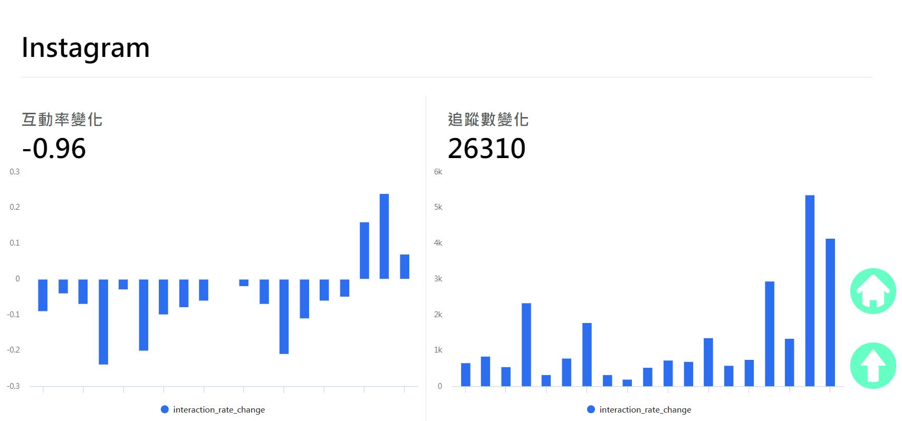
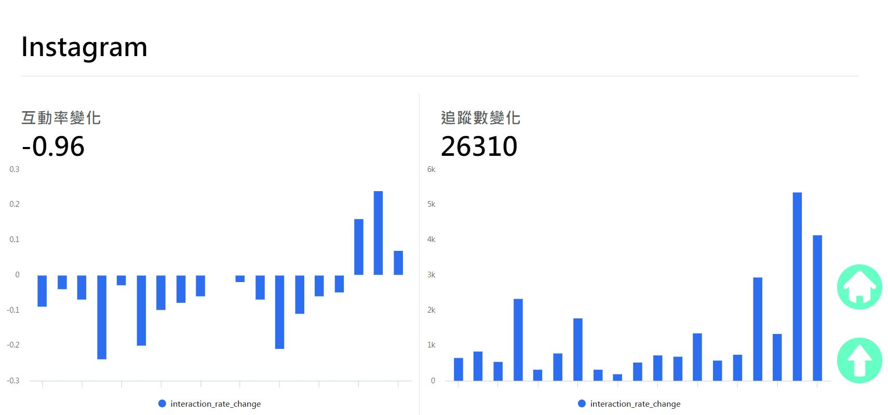
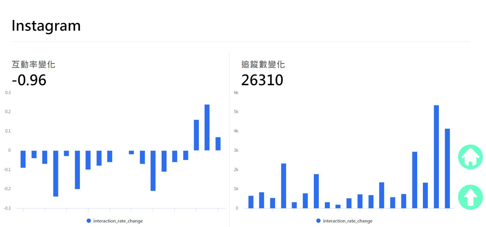

簡介
此專案共分為兩個部分
(一)爬蟲程式：分別撰寫Youtube、Instergram、Facebook的爬蟲程式去取得各網紅的資料(追蹤人數、貼文按讚次數、貼文留言數等等)，這些資料會儲存為xlsx格式(方便後續做統計)
(二)網頁呈現：後端由Python Flask撰寫，主要工作為取得資料，讓前端經由api取得資料。
網頁展示
 

此專案共分為兩個部分
(一)爬蟲程式：分別撰寫Youtube、Instergram、Facebook的爬蟲程式去取得各網紅的資料(追蹤人數、貼文按讚次數、貼文留言數等等)，這些資料會儲存為xlsx格式(方便後續做統計)
(二)網頁呈現：後端由Python Flask撰寫，主要工作為取得資料，讓前端經由api取得資料。
